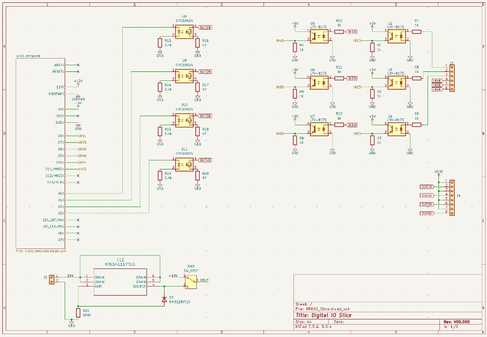
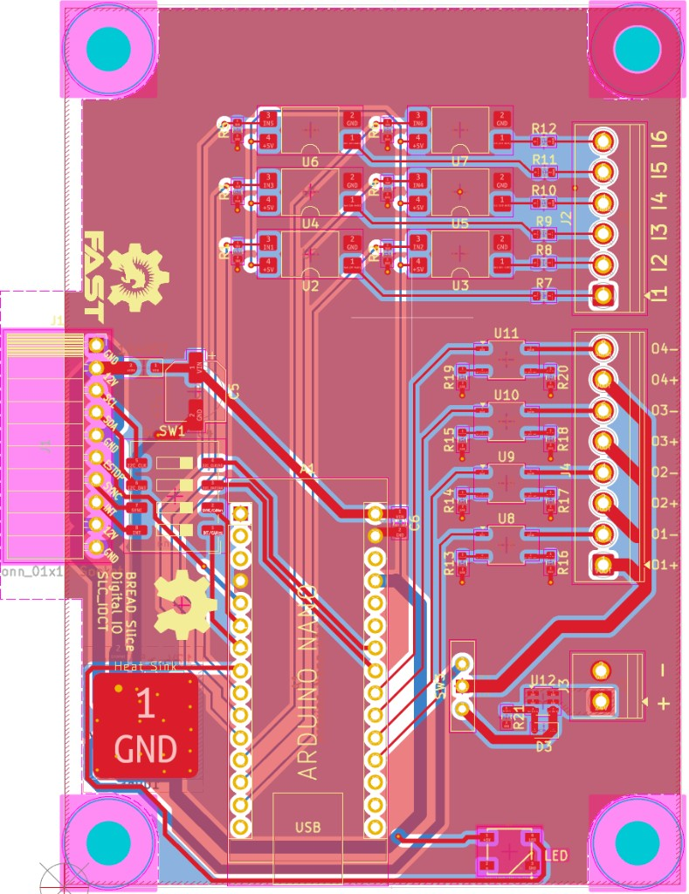

Open source · Industrial
Industrial IO Card for BREAD
24V-tolerant digital I/O PCB for BREAD (Broadly Reconfigurable and Expandable Automation Device), an open-source modular automation platform.



Overview
24V-tolerant digital I/O PCB for BREAD (Broadly Reconfigurable and Expandable Automation Device), an open-source modular automation platform.
Notable features
- Optocoupler voltage isolation
- Current-limiting resistors on inputs and outputs
- Reverse-voltage protection on 24V input
- Designed in KiCad
- Reverse-voltage protection validated in LTSpice
Project details (Situation · Task · Action · Result)
Situation
Goal was an open-source, modular, scalable automation solution for robotics, industrial control, and scientific experimentation (BREAD).
Task
Design a digital I/O PCB interfacing directly with 24V industrial sensors/actuators, PLC-style.
Action
Designed schematic/layout for six 24V-tolerant inputs and four 24V outputs; optocoupler isolation on inputs; DC-DC solid state relay driving outputs at 24V; current-limiting resistors on inputs/outputs; reverse-voltage protection on 24V input.
Result
Added a key data acquisition capability to BREAD, prioritizing input protection, reliable switching, and compatibility with field devices.